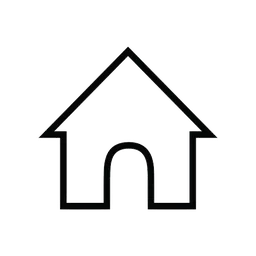
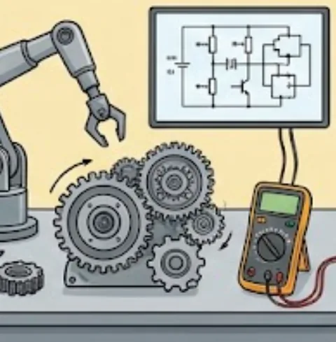
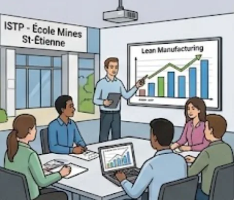
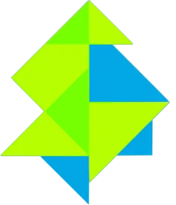
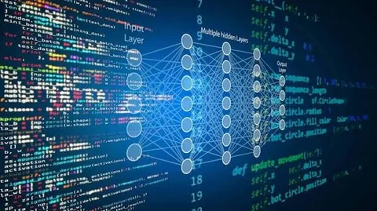
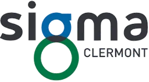

Ingénieur en Génie Industriel | Expert en Science des Données | Industrie 4.0 & Transformation Digitale
Ingénieur diplômé en Génie Industriel et titulaire d’un Mastère Spécialisé en Science des Données, j’évolue depuis 4 ans dans le digital appliqué à l’industrie : collecte et exploitation de données machines, développement et déploiement d’outils digitaux, formation des utilisateurs. Chez Constellium puis chez Michelin Motorsport, j’ai contribué à des projets de transformation digitale industrielle.
Pour moi, la technologie n’a de valeur que si elle répond à un besoin concret du terrain. Je recherche aujourd’hui un poste, au plus près des opérations industrielles, où relier les métiers et les outils digitaux (données, IA) pour contribuer à la performance et à l’industrie du futur.
25 → 57machines équipées en collecte de donnéesConstellium Issoire
35collaborateurs formés aux outils digitauxConstellium Issoire
100 k€+d’économie annuelle estimée grâce à une analyse de donnéesConstellium Issoire · Braincube
12 sem.de mission à l’internationalConstellium Singen, Allemagne
01 / MON PARCOURS
Du terrain aux données.
Une trajectoire construite autour de la performance industrielle, de la digitalisation et de l’analyse des données. Pour chaque étape : ce que j’ai fait, et pourquoi je l’ai choisie.
01 / 082002 — 2020
ÉTAPE 01

Une enfance au cœur des volcans d'Auvergne
Nébouzat · Rochefort-Montagne · Clermont-Ferrand
Originaire de Nébouzat, au cœur de la chaîne des Puys, j'ai grandi dans un environnement où comptaient le travail, la proximité et la simplicité. Scolarité primaire à Nébouzat, collège à Rochefort-Montagne, puis lycée Lafayette à Clermont-Ferrand, où j'ai obtenu un baccalauréat scientifique option Sciences de l'Ingénieur.
Attiré très tôt par les sciences et la technique, je cherchais à comprendre comment les choses fonctionnent concrètement.
Pourquoi cette étapeJe voulais découvrir rapidement le monde industriel avant de m'engager dans de longues études : j'ai choisi un DUT Génie Industriel et Maintenance plutôt qu'une classe préparatoire.
AuvergneSciencesSciences de l'Ingénieur
02 / 082020 — 2022

ÉTAPE 02
DUT Génie Industriel et Maintenance
Université Clermont Auvergne
J'ai intégré le département Génie Industriel et Maintenance de l'Université Clermont Auvergne, qui m'a donné de solides bases techniques et une vision globale du fonctionnement des installations industrielles.
Au programme : électricité industrielle et schémas électriques, mécanique et résistance des matériaux, hydraulique et pneumatique, robotique, automatisme et maintenance des systèmes.
Pourquoi cette étapeCes bases techniques, je pouvais les confronter au réel dès la deuxième année grâce à l'alternance : la meilleure façon de savoir si le monde industriel me correspondait.
Technicien de maintenance en alternance · Usine desserts (La Laiterie de Rians)
Au sein de l'équipe maintenance de l'usine desserts, j'ai évolué dans un environnement agroalimentaire exigeant : interventions de terrain sur les équipements de production, dans le respect des normes d'hygiène et de sécurité, pour assurer la continuité de la production.
Maintenance préventive et corrective, diagnostic de pannes multi-techniques (électrique, mécanique, pneumatique), soudure MIG, et contribution à la fiabilité des installations et à la réduction des dysfonctionnements.
Pourquoi cette étapeCette immersion m'a fait découvrir la réalité des ateliers et le poids de la maintenance dans la performance d'une usine. Elle a confirmé mon envie de viser des fonctions à plus forte responsabilité.
Maintenance préventiveMaintenance correctiveDiagnostic de panneSoudure MIGAgroalimentaire
04 / 082022 — 2025

ÉTAPE 04
Diplôme d'Ingénieur en Génie Industriel
ISTP · École Nationale Supérieure des Mines de Saint-Étienne
J'ai poursuivi à l'ISTP, dans le cadre du diplôme d'ingénieur en Génie Industriel de l'École des Mines de Saint-Étienne, en alternance : électrotechnique, mécanique, thermodynamique, mathématiques appliquées, statistiques et gestion industrielle.
Lean Manufacturing, Supply Chain, gestion de projet et management d'équipe m'ont donné une vision globale de la performance industrielle, avec une approche orientée amélioration continue et conduite du changement.
Pourquoi cette étapeAprès le terrain, je voulais comprendre l'usine dans son ensemble : flux, projets, équipes, performance. Le cursus d'ingénieur m'a apporté cette vision d'ensemble.
Génie industrielLean ManufacturingSupply ChainGestion de projet
05 / 08SEPT. 2022 — SEPT. 2025
ÉTAPE 05

Ingénieur Transformation Digitale Industrielle
Constellium Issoire · Alternance · Service Projets Digitaux
Chez Constellium, acteur de la transformation de l'aluminium (aéronautique, spatial, défense), j'ai travaillé sur toute la chaîne de valeur de la donnée industrielle : de l'acquisition des données machines jusqu'à leur exploitation pour l'aide à la décision.
Mise en place et fiabilisation de systèmes de collecte connectés aux automates (IBA), contribution à des projets de maintenance prédictive, tableaux de bord Power BI pour les KPI énergétiques (électricité, eau), formation des utilisateurs, et analyses Braincube ayant identifié un levier de performance estimé à plus de 100 k€ par an.
Pourquoi cette étapeC'est là que j'ai vu le cycle de vie complet de la donnée, de la machine à la décision, et que ma curiosité pour la data est devenue une vraie orientation de carrière.
Constellium Singen · Département Maintenance · 12 semaines
Au sein du département Maintenance de Constellium Singen, j'ai développé des tableaux de bord Power BI pour suivre les indicateurs de maintenance (MTBF, MTTR, taux de disponibilité des équipements).
J'ai aussi déployé en autonomie une solution de maintenance prédictive (CCM), déjà utilisée à Issoire, pour anticiper les défaillances et améliorer la fiabilité des installations, dans un environnement anglophone et multiculturel.
Pourquoi cette étapeJe voulais élargir mon expérience à l'international, gagner en autonomie et montrer qu'une solution éprouvée sur un site pouvait être transférée sur un autre.
Power BIMTBF / MTTRMaintenance prédictive (CCM)International
07 / 082025 — 2026

ÉTAPE 07

Mastère Spécialisé Expert en Science des Données
SIGMA Clermont
Pour approfondir mes compétences data, j'ai intégré le Mastère Spécialisé Expert en Science des Données de SIGMA Clermont : statistiques, Machine Learning, Deep Learning, Business Intelligence, développement Python, bases de données PostgreSQL et ingénierie des données.
Les projets réalisés m'ont permis de mettre en pratique les concepts étudiés.
Pourquoi cette étapeAprès avoir découvert la data sur le terrain, je voulais en maîtriser les fondements pour concevoir des solutions plus solides.
J'ai contribué à des projets de transformation digitale visant à améliorer l'efficacité opérationnelle et la valorisation des données. Mon principal projet : digitaliser le processus des Demandes d'Achats Électroniques (DAE), jusque-là basé sur Excel, macros et échanges d'e-mails, avec une solution intégrée Power Platform (Power Apps, Power Automate, SharePoint, Power BI).
J'ai aussi travaillé sur des traitements de données avec Databricks, des tableaux de bord décisionnels, une étude de prévision des ventes de pneumatiques historiques par Machine Learning, et accompagné les utilisateurs dans la conduite du changement.
Pourquoi cette étapeRéunir les deux versants de mon parcours, le terrain industriel et la data, sur des processus métiers réels et dans un environnement exigeant en performance.
Power AppsPower AutomateSharePointPower BIDatabricksMachine Learning
Étape 1 sur 8
02 / PROJETS MARQUANTS
Trois projets menés en entreprise.
Des réalisations concrètes, à l’intersection des métiers industriels, des outils numériques et de la donnée.
01Demande
→
02Validation
→
03Suivi
WORKFLOW DIGITAL · POWER PLATFORM
MICHELIN MOTORSPORT01 / DIGITALISATION
Optimiser le processus de demandes d’achats
Remplacer un fonctionnement reposant sur Excel, des macros et des échanges d’e-mails par une solution intégrée pour les Demandes d’Achats Électroniques (DAE) : plus claire, traçable et homogène.
Mon rôle
Analyse et cartographie du processus, ateliers avec les parties prenantes, développement, tests pilotes, accompagnement des utilisateurs et conduite du changement.
La solution
Application Power Apps, automatisations de notifications et de validations avec Power Automate, archivage SharePoint et tableau de bord Power BI.
↗
Objectif visé : réduire les tâches administratives à faible valeur ajoutée, améliorer la traçabilité et limiter les erreurs de saisie.
Power AppsPower AutomateSharePointPower BIConduite du changement
IBAPLCDATABIOTSQL
COLLECTER / SURVEILLER / VALORISER
CONSTELLIUM · ISSOIRE02 / INDUSTRIE 4.0
Mettre en place et fiabiliser un système de collecte de données
Étendre la collecte de données machines connectées aux automates industriels (IBA) et superviser les flux pour détecter les équipements qui ne transmettent plus leurs données.
Actions
Installation et configuration IBA, suivi des flux sous Power BI, sauvegardes SVN, scripts Python / Batch et formation des utilisateurs.
Impact documenté
Parc de machines équipées passé de 25 à 57 ; 35 collaborateurs formés ; meilleure visibilité sur les flux de données.
IBAPower BIPythonSVNFormation
PIÈCES↘Consommation
LEVIER◎Identifié
ÉCONOMIE100k€+Par an (estim.)
ANALYSE DE DONNÉES · BRAINCUBE
CONSTELLIUM · ISSOIRE03 / DATA ANALYTICS
Réduire la consommation de pièces mécaniques
Exploiter les données de production pour comprendre l’usure de pièces mécaniques et valider des hypothèses d’amélioration du procédé.
Actions
Analyses de données avec Braincube pour tester des hypothèses d’amélioration et identifier un levier de performance.
Impact documenté
Économie estimée à plus de 100 k€ par an (d’après mon CV).
BraincubeAnalyse de donnéesUsureAmélioration continue
ⓘ Les résultats présentés sont qualitatifs ou issus des éléments de mon CV. Les détails techniques et données internes restent volontairement confidentiels.
03 / COMPÉTENCES
À l’aise entre le terrain et le code.
Une double compétence pour comprendre les besoins opérationnels et construire des outils adaptés.
01
⌘
Data & Business Intelligence
Transformer des données en indicateurs lisibles pour soutenir la décision.
Power BISQLPythonETLDatabricksMachine Learning
02
⤧
Digitalisation des processus
Concevoir des applications métiers et automatiser les tâches répétitives.
Power AppsPower AutomateSharePointMicrosoft 365
03
⌬
Industrie 4.0
Collecter, superviser et valoriser les données issues des équipements industriels.
IBABraincubeMaintenance prédictiveKPI énergie
04
↗
Gestion de projet
Faire le lien entre utilisateurs, équipes techniques et objectifs opérationnels.
Analyse du besoinTestsFormationAccompagnement
MA FAÇON DE TRAVAILLER
01 Comprendre le terrain
→
02 Construire simplement
→
03 Mesurer l’impact
04 / CONTACT
Une opportunité à me proposer ? Échangeons.
Je suis à la recherche d’un poste en data, solutions digitales ou transformation industrielle. N’hésitez pas à me contacter, je vous répondrai avec plaisir.